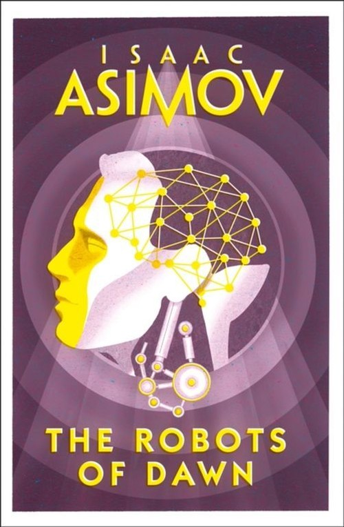

The Robots of Dawn (1983)
Synopsis
A millennium into the future two advances have altered the course of human history: the colonization of the Galaxy and the creation of the positronic brain. Isaac Asimov's Robot novels chronicle the unlikely partnership between a New York City detective and a humanoid robot who must learn to work together. Detective Elijah Baiey is called to the Spacer world Aurora to solve a bizarre case of roboticide. The prime suspect is a gifted roboticist who had the means, the motive, and the opportunity to commit the crime. There's only one catch: Baley and his positronic partner, R. Daneel Olivaw, must prove the man innocent. For in a case of political intrigue and love between woman and robot gone tragically wrong, there's more at stake than simple justice. This time Baley's career, his life, and Earth's right to pioneer the Galaxy lie in the delicate balance.
Download PDF- 1 - Baley
- 2 - Daneel
- 3 - Giskard
- 4 - Fastolfe
- 5 - Daneel and Giskard
- 6 - Gladia
- 7 - Again Fastolfe
- 8 - Fastolfe and Vasilia
- 9 - Vasilia
- 10 - Again Vasilia
- 11 - Gremionis
- 12 - Again Gremionis
- 13 - Amadiro
- 14 - Again Amadiro
- 15 - Again Daneel and Giskard
- 16 - Again Gladia
- 17 - The Chairman
- 18 - Again The Chairman
- 19 - Again Bailey